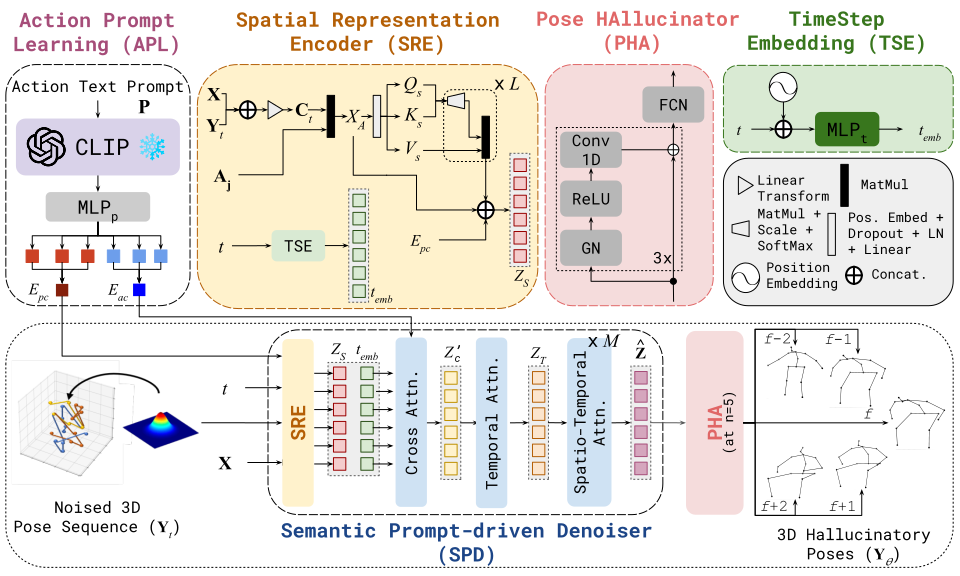
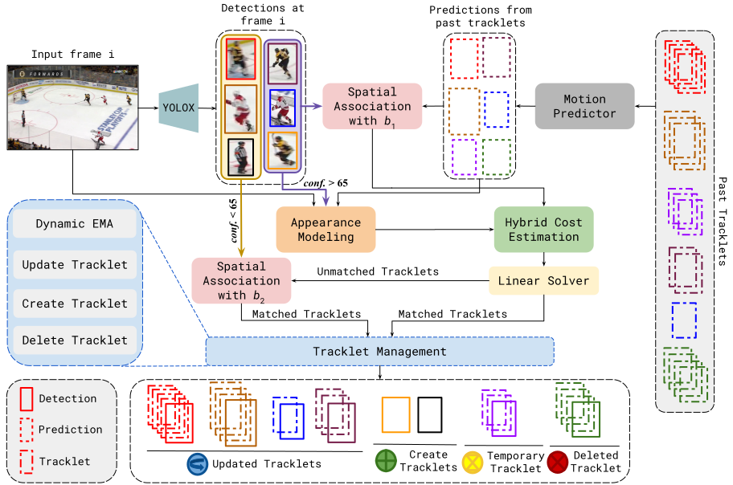
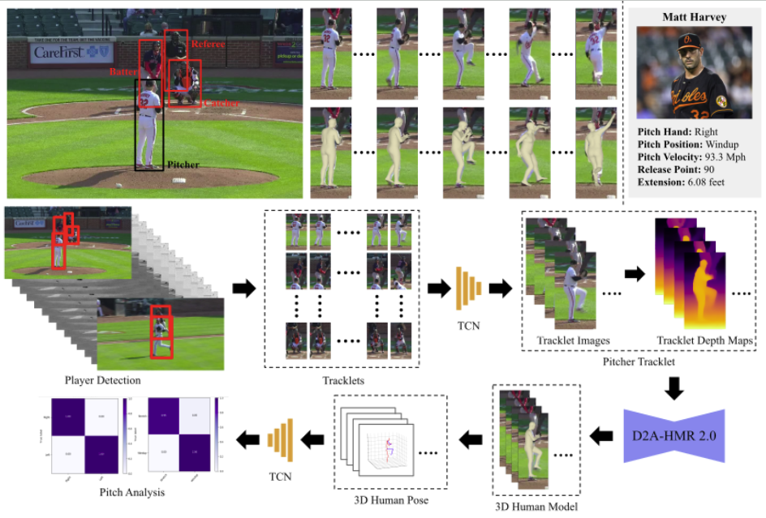
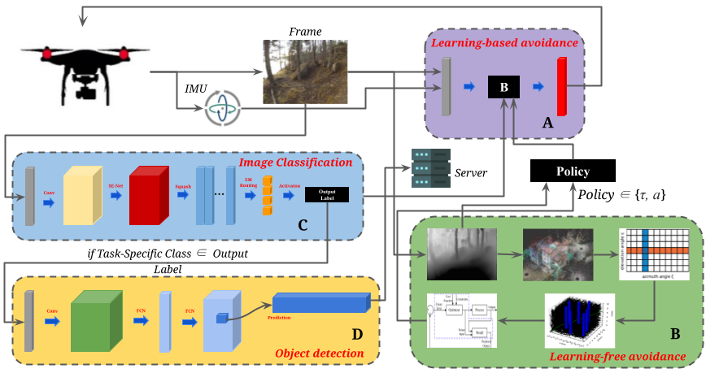

|
Jerrin Bright I am a Founding Engineer at Mecka AI, building the data layer for humanoids. We collect large-scale real-world data to train emboddied agents, where I drive 3D human demonstration understanding which feeds into Vision-Language Action (VLA) and world model pipelines, serving pioneering robotics and AI companies. I'm also a full-time doctoral student at the Vision and Image Processing Lab, University of Waterloo, supervised by Dr. John Zelek. My research focuses on bridging the gap between human and machine perception, exploring how artificial systems can achieve robust world understanding from sparse visual inputs. I draw inspiration from the way humans rapidly infer geometry, motion, and dynamics using limited observations. My broader interests include human motion understanding, vision-language-action modeling, and large-scale multimodal data systems, viewing data itself as an indispensable layer in the development of next-gen intelligent, interactive agents. Previously, I collaborated with the Baltimore Orioles (MLB) on robust baseball player kinematics analysis and performance evaluation. During my undergrad, I worked with McMaster University, Arizona State University, Yuan-Ze University, and Indian Institute of Science on UAV navigation, visual odometry, camera calibration, and robotics. Beyond academia, I am an avid cricket and chess enthusiast who enjoys travelling, kick-boxing, skating, sketching, and working out at the gym. |


|


{kind=link}
News
|
Current FocusAt Mecka AI: Building scalable pipelines for 3D human demonstration understanding from egocentric data (hand/body pose estimation), to power next-gen emboddied AI agents training. PhD Research: Investigating 4D world reconstruction from strong human prior modeling and robust camera-scene-human joint reasoning from monocular observations. |
PublicationsRepresentative papers are highlighted. See Google Scholar for a full list. |
|
|
Avatar4D: Synthesizing Domain-Specific 4D Humans for Real-World Pose Estimation
Jerrin Bright, Zhibo Wang, Dmytro Klepachevskyi, Yuhao Chen, Sirisha Rambhatla, David Clausi, John Zelek arXiv preprint, 2025 ArXiv | BibTeX Synthesizing domain-specific 4D humans for improving real-world pose estimation. |
|

|
DreamPose3D: Hallucinative Diffusion with Prompt Learning for 3D Human Pose Estimation
Jerrin Bright, Yuhao Chen, John Zelek Submitted to IEEE Transactions on Multimedia, 2026 ArXiv | BibTeX A hallucinative diffusion approach with prompt learning for 3D human pose estimation. |

|
Position Paper: New Views of Shots - Towards Measures of Net Visibility and Reachability
Evan Iaboni, Sebastian Negulescu, Miles Pitassi, Amir Nazemi, Jerrin Bright, Vasyl Chomko, David A. Clausi, Sven Dickinson, Tim Brecht Linkoping Hockey Analytics Conference, 2025 Paper | BibTeX Novel measures for analyzing shot quality through net visibility and reachability in hockey. |

|
Gen4D: Synthesizing Humans and Scenes in the Wild
Jerrin Bright, Zhibo Wang, Yuhao Chen, Sirisha Rambhatla, David Clausi, John Zelek CVPR Workshop, 2025 Poster Project Page | ArXiv | Poster | BibTeX A framework for synthesizing realistic 4D humans and scenes in unconstrained environments. |
|

|
SportMamba: Adaptive Non-Linear Multi-Object Tracking with State Space Models for Team Sports
Dheeraj Khanna, Jerrin Bright, Yuhao Chen, John Zelek CVPR Workshop, 2025 Paper | Poster | BibTeX Adaptive multi-object tracking using state space models for team sports applications. |

|
Seeing Beyond the Crop: Using Language Priors for Out-of-Bounding Box Keypoint Prediction
Bavesh Balaji, Jerrin Bright, Yuhao Chen, Sirisha Rambhatla, John Zelek, David Clausi NeurIPS, 2024 Poster Paper | OpenReview | Slides | Poster | BibTeX Leveraging language priors to predict keypoints that fall outside the bounding box crop. |
|

|
PitcherNet: Powering the Moneyball Evolution in Baseball Video Analytics
Jerrin Bright, Bavesh Balaji, Yuhao Chen, David A Clausi, John Zelek CVPR Workshop, 2024 Oral ArXiv | Paper | Video | Slides | Poster | BibTeX A robust framework for baseball pitcher biomechanics analysis from broadcast videos. |

|
Distribution and Depth-Aware Transformers for 3D Human Mesh Recovery
Jerrin Bright, Bavesh Balaji, Harish Prakash, Yuhao Chen, David A Clausi, John Zelek Conference on Robots and Vision (CRV), 2024 Oral Best Paper Award ArXiv | Paper | Video | Slides | Poster | BibTeX A transformer-based approach for 3D human mesh recovery with distribution and depth awareness. |

|
Domain-Guided Masked Autoencoders for Unique Player Identification
Bavesh Balaji, Jerrin Bright, Sirisha Rambhatla, Yuhao Chen, Alexander Wong, John Zelek, David A Clausi Conference on Robots and Vision (CRV), 2024 Oral ArXiv | Paper | Slides | Poster | BibTeX Domain-guided masked autoencoders for unique player identification in sports videos. |
|
|
Mitigating Motion Blur for Robust 3D Baseball Player Pose Modeling for Pitch Analysis
Jerrin Bright, Yuhao Chen, John Zelek ACM MMSports Workshop, 2023 Paper | Slides | Poster | BibTeX Addressing motion blur challenges for robust 3D pose estimation of baseball players during pitch analysis. |
Thesis |

|
4D World Reconstruction of Humans, Scenes, and Camera Systems
Jerrin Bright, John Zelek PhD Comprehensive Exam, University of Waterloo, 2026 PDF | Slides | BibTeX |

|
Robust 3D Human Modeling for Baseball Sports Analytics
Jerrin Bright, John Zelek Master's Thesis, University of Waterloo, 2024 UWSpace | PDF | Slides | BibTeX |
|

|
An End-to-End Autonomous UAV System in GPS-Denied and Unstructured Environments
Jerrin Bright, Suryaprakash Rajkumar, Arockia Selvakumar Bachelor's Thesis, VIT Chennai, 2022 PDF | Slides | BibTeX |
Awards and HonorsScholarships:
Honors and Awards:
|
Academic ServiceReviewer: CVPR, NeurIPS, 3DV, IROS, EAAI, CVSports, CVIU, MMSports, TNNLS, TCSVT, CVIS, CTIS, IMAVIS, The Journal of Supercomputing Technical Program Member: ACM MMSports @ ACM Multimedia 2024 Teaching Assistant:
|
Media CoverageMy work has been featured in:
|
|
Design inspired by Jon Barron. Last updated 2026. |